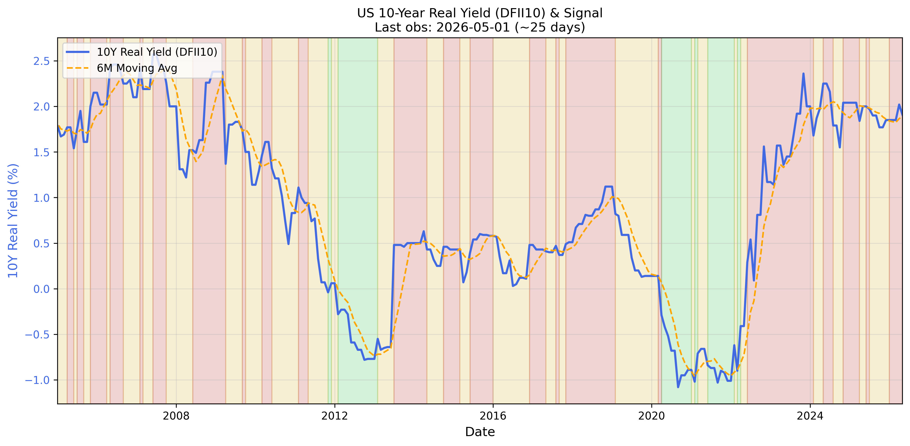
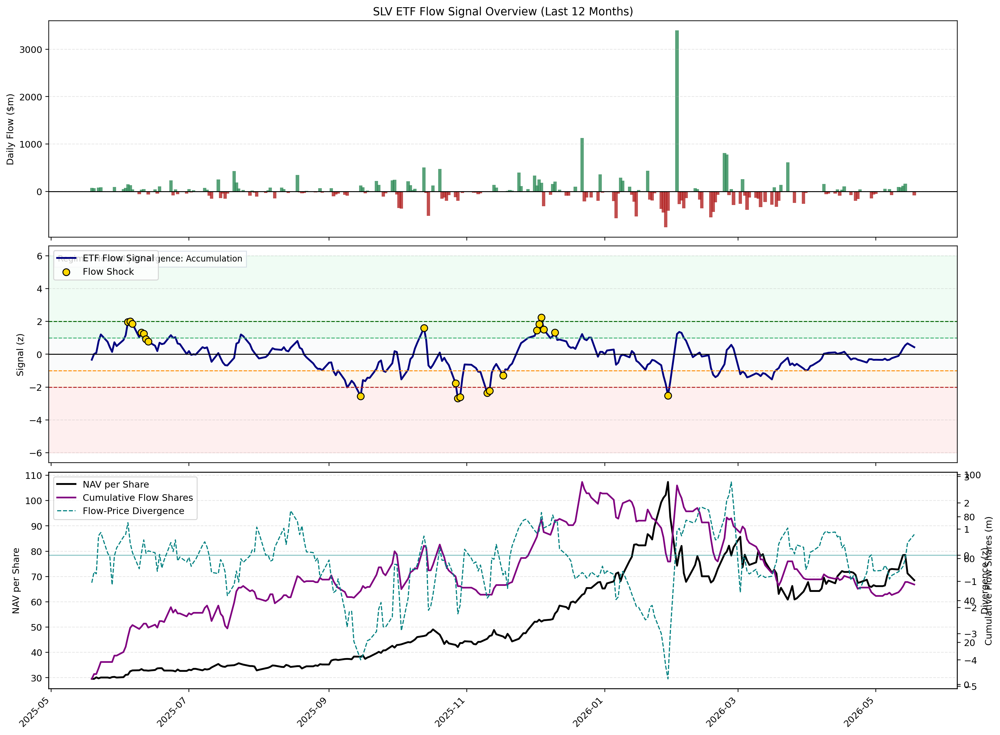
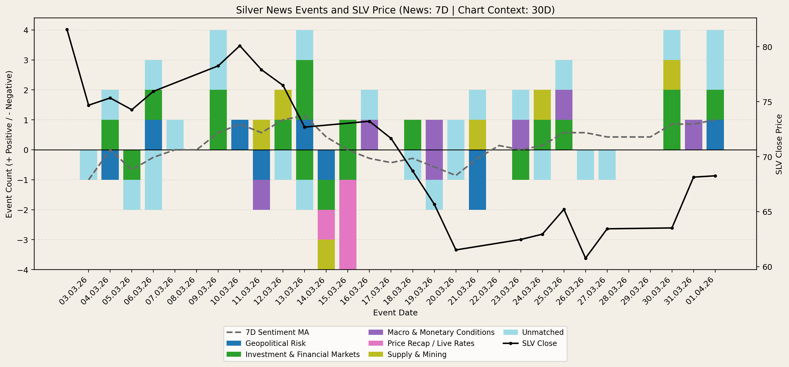
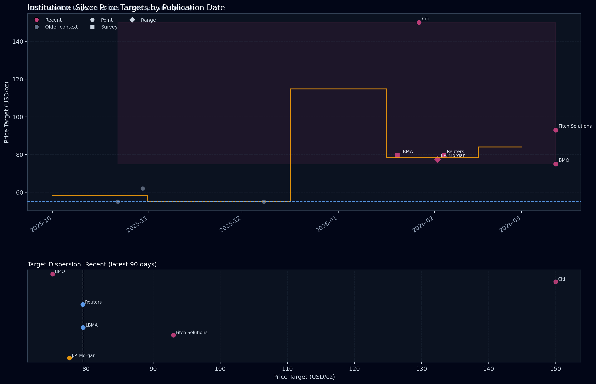
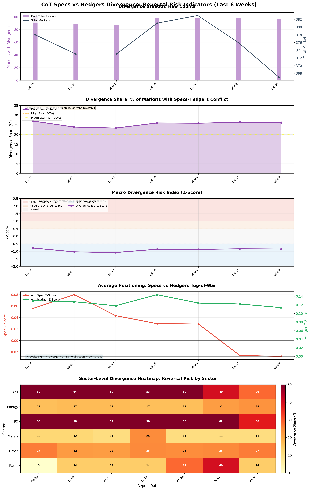

Investor Anatomy Series
History-backed architecture-aligned silver synthesis built from the latest Silver Market Analyst input stack.
Silver enters a fragile recovery phase as structural liquidity expansion and safe-haven demand collide with persistent real-rate headwinds.
Opening Thesis
The silver market is currently navigating a complex transition, shifting from a period of aggressive liquidation toward a state of cautious stabilization. We classify the current system as conflicted but leaning toward an upward tactical bias, primarily because systemic stress is activating safe-haven flow logic that overrides traditional valuation constraints. While the asset has faced a significant drawdown over the last thirty days, the underlying market structure remains intact, supported by a resilient speculative base and massive institutional inflows. This setup matters because it highlights a decoupling of silver from interest-rate sensitivity in favor of broader global liquidity dynamics.
Outlook
Over the one-month tactical horizon, we anticipate a bullish bias as the volatility-driven stress regime triggers defensive capital allocation regardless of the cost of carry. Moving into the three-month cyclical window, the outlook remains positive, underpinned by money supply growth and a favorable neutral-rate stance that should absorb further price shocks. Looking out to the twelve-month horizon, the narrative shifts toward structural tightness, where a projected sixth consecutive annual market deficit and expanding industrial applications in green technology provide a firm, elevated floor for the asset's long-term valuation.
Market Regime and Macro Drivers
The dominant force currently steering the silver market is a regime of liquidity expansion, evidenced by a significant one point six percent three-month momentum in the M2 money supply. This expansionary environment effectively counteracts the bearish pressure from the real interest rate trend, where the ten-year TIPS yield remains stubbornly above its long-term moving average. We are observing a liquidity dominance model where the usual headwinds of a strong dollar and high real yields are being ignored in favor of wealth preservation amid elevated financial stress. This stress, marked by a VIX exceeding the critical thirty threshold, creates a regime where silver functions less as an industrial metal and more as a systemic hedge.

Market Expression and Capital Flows
Market expression is currently characterized by a bottoming risk profile, where recent price weakness has failed to trigger the expected speculative exit. Instead, we observe a divergence where four-week flow momentum has remained positive despite the sharp monthly drawdown, suggesting that professional investors are using price dips to accumulate. This conviction is confirmed by substantial capital flows into the iShares Silver Trust, including a recent single-day injection of over six hundred million dollars. Although realized volatility remains in the top quintile of historical observations, the fact that silver is maintaining its position above the two-hundred-day moving average suggests a durable base is forming despite the high-volatility environment.

News Flow and Narrative
The current news narrative is in a state of transition, moving from geopolitical-induced panic to a state of relief as strikes on energy infrastructure show signs of a pause. This cooling of immediate tension allows the market to refocus on supportive themes like corporate consolidation in the mining sector and emerging industrial demand requirements. However, supply-side constraints remain a persistent backdrop, with mining suspensions in Mexico highlighting the fragility of the physical production chain. These stories are reinforcing a floor for the metal, even as high-frequency price action remains sensitive to shifts in global manufacturing sentiment and diplomatic developments.

Target Pricing and Research
Institutional research has undergone a wholesale upward re-rating in early 2026, with the median forecast for the year now clustering near eighty dollars per ounce. We see a significant departure from the conservative fifty-five-dollar targets seen at the end of last year, as major banks adjust their models for persistent physical market deficits. While some tactical outliers suggest the potential for liquidity-driven spikes toward the triple digits in the short term, the broader consensus has settled into a much higher structural range. This re-rating reflects an institutional acknowledgment that silver’s role in solar photovoltaics and AI infrastructure is creating a demand profile that is no longer strictly cyclical, but structural.

Conflicts, Risks & Invalidation Watchpoints
The primary conflict in our current assessment lies in the disconnect between bearish U.S. dollar index momentum and strengthening speculative positioning in the currency itself, which creates a risk of a sudden dollar short-squeeze. To invalidate our bullish tactical thesis, we would need to see the speculative net position in silver break below its historical floor or a multi-week flip in ETF flow momentum to the negative. Furthermore, if market volatility were to compress rapidly without a corresponding rise in industrial demand indicators, the stress override logic that currently supports prices would likely dissipate, leaving the metal vulnerable to a mean-reversion move toward its fifty-day moving average.

Closing
In summary, silver is currently a market where the plumbing of global liquidity is winning the battle against high interest rates. Think of the current environment as a coiled spring; while the price has been suppressed by recent volatility, the combination of institutional accumulation and expanding money supply suggests the path of least resistance remains higher. We continue to monitor the interplay between systemic stress and the dollar for any signs that this supportive liquidity floor is beginning to crack.
Generated: 2026-03-29 08:53 UTC | Model: models/gemini-3-flash-preview | Source: signal_history.jsonl